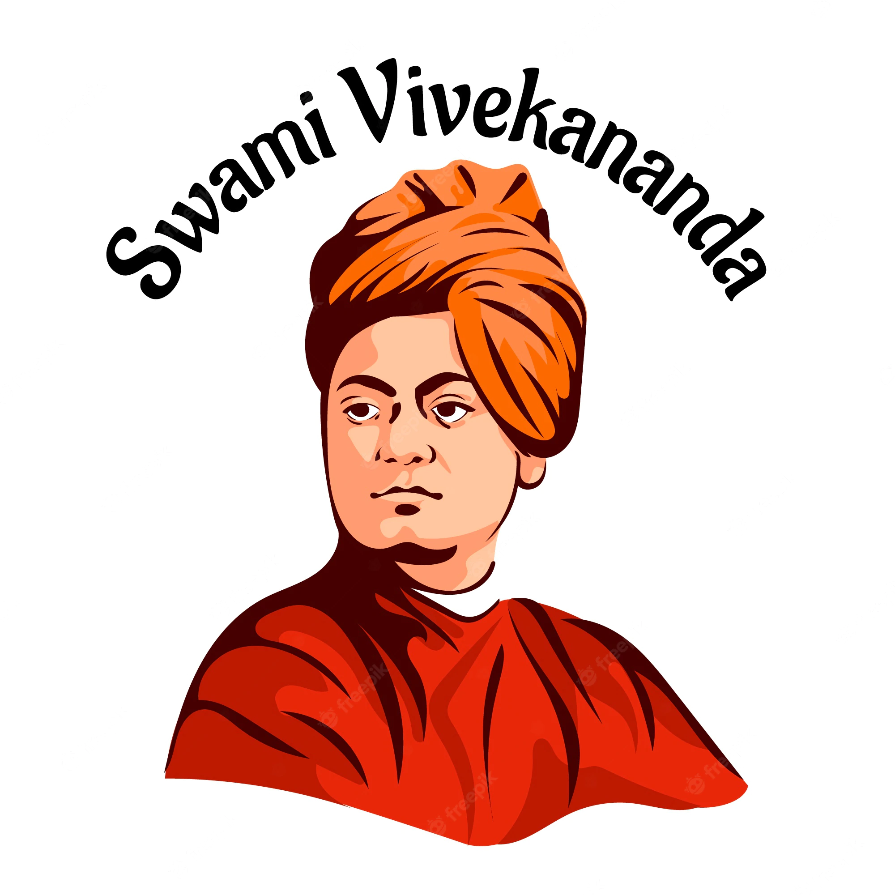

SWAMI VIVEKANANDA

About of Vivekananda
Swami Vivekananda, known in his pre-monastic life as Narendra Nath Datta, was born in an affluent family in Kolkata on 12 January 1863.
His father, Vishwanath Datta, was a successful attorney with interests in a wide range of subjects, and his mother, Bhuvaneshwari Devi, was endowed with deep devotion, strong character and other qualities.
A precocious boy, Narendra excelled in music, gymnastics and studies. By the time he graduated from Calcutta University, he had acquired a vast knowledge of different subjects, especially Western philosophy and history.
Born with a yogic temperament, he used to practise meditation even from his boyhood, and was associated with Brahmo Movement for some time.
With Sri Ramakrishna
At the threshold of youth Narendra had to pass through a period of spiritual crisis when he was assailed by doubts about the existence of God.
It was at that time he first heard about Sri Ramakrishna from one of his English professors at college.
One day in November 1881, Narendra went to meet Sri Ramakrishna who was staying at the Kali Temple in Dakshineshwar.
He straightaway asked the Master a question which he had put to several others but had received no satisfactory answer: “Sir, have you seen God?” Without a moment’s hesitation, Sri Ramakrishna replied: “Yes, I have.
I see Him as clearly as I see you, only in a much intenser sense.”Apart from removing doubts from the mind of Narendra, Sri Ramakrishna won him over through his pure, unselfish love.
Thus began a guru-disciple relationship which is quite unique in the history of spiritual masters. Narendra now became a frequent visitor to Dakshineshwar and, under the guidance of the Master, made rapid strides on the spiritual path. At Dakshineshwar, Narendra also met several young men who were devoted to Sri Ramakrishna, and they all became close friends.
Difficult Situations
After a few years two events took place which caused Narendra considerable distress.
One was the sudden death of his father in 1884. This left the family penniless, and Narendra had to bear the burden of supporting his mother, brothers and sisters.
The second event was the illness of Sri Ramakrishna which was diagnosed to be cancer of the throat.
In September 1885 Sri Ramakrishna was moved to a house at Shyampukur, and a few months later to a rented villa at Cossipore.
In these two places the young disciples nursed the Master with devoted care.
In spite of poverty at home and inability to find a job for himself, Narendra joined the group as its leader.
Beginnings of a Monastic Brotherhood
Sri Ramakrishna instilled in these young men the spirit of renunciation and brotherly love for one another.
One day he distributed ochre robes among them and sent them out to beg food.
In this way he himself laid the foundation for a new monastic order.
He gave specific instructions to Narendra about the formation of the new monastic Order.
In the small hours of 16 August 1886 Sri Ramakrishna gave up his mortal body.
After the Master’s passing, fifteen of his young disciples (one more joined them later) began to live together in a dilapidated building at Baranagar in North Kolkata.
Under the leadership of Narendra, they formed a new monastic brotherhood, and in 1887 they took the formal vows of sannyasa, thereby assuming new names.
Narendra now became Swami Vivekananda (although this name was actually assumed much later.)
Awareness of Life’s Mission
After establishing the new monastic order, Vivekananda heard the inner call for a greater mission in his life.
While most of the followers of Sri Ramakrishna thought of him in relation to their own personal lives, Vivekananda thought of the Master in relation to India and the rest of the world.
As the prophet of the present age, what was Sri Ramakrishna’s message to the modern world and to India in particular? This question and the awareness of his own inherent powers urged Swamiji to go out alone into the wide world.
So in the middle of 1890, after receiving the blessings of Sri Sarada Devi, the divine consort of Sri Ramakrishna, known to the world as Holy Mother, who was then staying in Kolkata, Swamiji left Baranagar Math and embarked on a long journey of exploration and discovery of India.
Discovery of Real India
During his travels all over India, Swami Vivekananda was deeply moved to see the appalling poverty and backwardness of the masses.
He was the first religious leader in India to understand and openly declare that the real cause of India’s downfall was the neglect of the masses.
The immediate need was to provide food and other bare necessities of life to the hungry millions.
For this they should be taught improved methods of agriculture, village industries, etc.
It was in this context that Vivekananda grasped the crux of the problem of poverty in India (which had escaped the attention of social reformers of his days): owing to centuries of oppression, the downtrodden masses had lost faith in their capacity to improve their lot.
It was first of all necessary to infuse into their minds faith in themselves.
For this they needed a life-giving, inspiring message.
Swamiji found this message in the principle of the Atman, the doctrine of the potential divinity of the soul, taught in Vedanta, the ancient system of religious philosophy of India.
He saw that, in spite of poverty, the masses clung to religion, but they had never been taught the life-giving, ennobling principles of Vedanta and how to apply them in practical life.
Thus the masses needed two kinds of knowledge: secular knowledge to improve their economic condition, and spiritual knowledge to infuse in them faith in themselves and strengthen their moral sense.
The next question was, how to spread these two kinds of knowledge among the masses? Through education – this was the answer that Swamiji found.
Need for an Organization
One thing became clear to Swamiji: to carry out his plans for the spread of education and for the uplift of the poor masses, and also of women, an efficient organization of dedicated people was needed. As he said later on, he wanted “to set in motion a machinery which will bring noblest ideas to the doorstep of even the poorest and the meanest.”
It was to serve as this ‘machinery’ that Swamiji founded the Ramakrishna Mission a few years later.
Decision to attend the Parliament of Religions
It was when these ideas were taking shape in his mind in the course of his wanderings that Swami Vivekananda heard about the World’s Parliament of Religions to be held in Chicago in 1893. His friends and admirers in India wanted him to attend the Parliament. He too felt that the Parliament would provide the right forum to present his Master’s message to the world, and so he decided to go to America. Another reason which prompted Swamiji to go to America was to seek financial help for his project of uplifting the masses.
Swamiji, however, wanted to have an inner certitude and divine call regarding his mission. Both of these he got while he sat in deep meditation on the rock-island at Kanyakumari. With the funds partly collected by his Chennai disciples and partly provided by the Raja of Khetri, Swami Vivekananda left for America from Mumbai on 31 May 1893.
The Parliament of Religions and After
His speeches at the World’s Parliament of Religions held in September 1893 made him famous as an ‘orator by divine right’ and as a ‘Messenger of Indian wisdom to the Western world’.
After the Parliament, Swamiji spent nearly three and a half years spreading Vedanta as lived and taught by Sri Ramakrishna, mostly in the eastern parts of USA and also in London.
Awakening His Countrymen
He returned to India in January 1897. In response to the enthusiastic welcome that he received everywhere, he delivered a series of lectures in different parts of India, which created a great stir all over the country.
Through these inspiring and profoundly significant lectures Swamiji attempted to do the following:
to rouse the religious consciousness of the people and create in them pride in their cultural heritage;
to bring about unification of Hinduism by pointing out the common bases of its sects;
to focus the attention of educated people on the plight of the downtrodden masses, and to expound his plan for their uplift by the application of the principles of Practical Vedanta.
Founding of Ramakrishna Mission
Soon after his return to Kolkata, Swami Vivekananda accomplished another important task of his mission on earth.
He founded on 1 May 1897 a unique type of organization known as Ramakrishna Mission, in which monks and lay people would jointly undertake propagation of Practical Vedanta, and various forms of social service, such as running hospitals, schools, colleges, hostels, rural development centres etc, and conducting massive relief and rehabilitation work for victims of earthquakes, cyclones and other calamities, in different parts of India and other countries.
Belur Math
In early 1898 Swami Vivekananda acquired a big plot of land on the western bank of the Ganga at a place called Belur to have a permanent abode for the monastery and monastic Order originally started at Baranagar, and got it registered as Ramakrishna Math after a couple of years. Here Swamiji established a new, universal pattern of monastic life which adapts ancient monastic ideals to the conditions of modern life, which gives equal importance to personal illumination and social service, and which is open to all men without any distinction of religion, race or caste.
Disciples
It may be mentioned here that in the West many people were influenced by Swami Vivekananda’s life and message.
Some of them became his disciples or devoted friends. Among them the names of Margaret Noble (later known as Sister Nivedita), Captain and Mrs Sevier, Josephine McLeod and Sara Chapman Bull, deserve special mention.
Nivedita dedicated her life to educating girls in Kolkata. Swamiji had many Indian disciples also, some of whom joined Ramakrishna Math and became sannyasins.
Last Days
In June 1899 he went to the West on a second visit. This time he spent most of his time in the West coast of USA.
After delivering many lectures there, he returned to Belur Math in December 1900. The rest of his life was spent in India, inspiring and guiding people, both monastic and lay.
Incessant work, especially giving lectures and inspiring people, told upon Swamiji’s health. His health deteriorated and the end came quietly on the night of 4 July 1902.
Before his Mahasamadhi he had written to a Western follower: “It may be that I shall find it good to get outside my body, to cast it off like a worn out garment.
But I shall not cease to work.
I shall inspire men everywhere until the whole world shall know that it is one with God.”